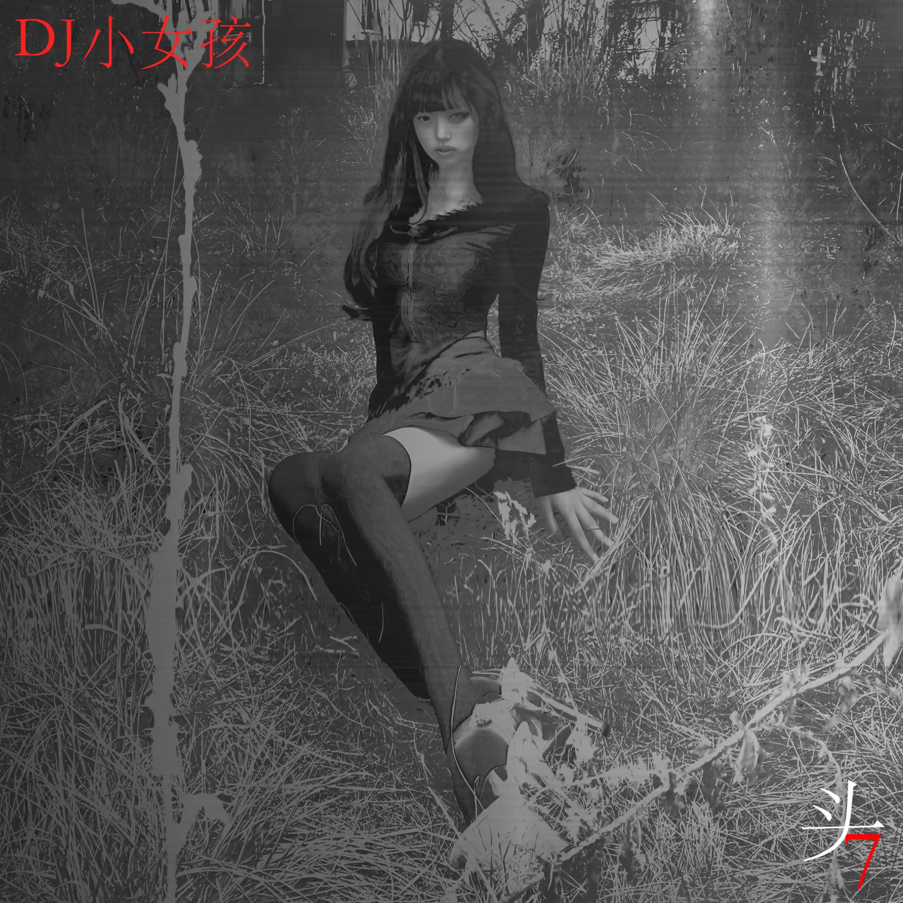

Album#32
头7


{kind=link}
亚洲恐怖+电子音乐。制作周期12天， 演绎一场模拟死亡，她回来了，但是她死了；生前组成她的执念走马灯，都被变成死后的残响。在这一刻你的耳机就是为她祭奠的花圈。
在 Hopico HMA2025 提名专辑 中找到的一张电子专辑，说实话，大晚上一个人听第一首「妈妈的女儿」还是有点瘆人的。
从专辑名字「头7」、专辑封面、专辑发布日期（清明节），你大概就能感受到这张专辑是有点「阴间」的，网易云有几个评论蛮好玩的：
- 这么阴我疫情那会听就不会阳了
- 孩子们，为什么关了音乐，小女孩的声音却没有停
- 亚文化的尽头了……在往下就是不能涉足的地方了……
我听的电子音乐不多，不太喜欢这个类型的音乐，总觉得这些音乐比较吵闹，做的不好的就像是街边放的土嗨 DJ 曲，每次路过都觉得烦。也有听过一些好听的，但一般也听不久，例如 TheFatRat、Alan Walker、BRAT、超级市场（「音乐会」这张专辑好听）。
「头7」这张专辑虽然有一点「阴间」，但整体来说还是一张很耐听的电子专辑，大量的地方戏曲、方言与丧乐采样带来了强烈的乡土气息，也很有特色。
「DJ小女孩」是音乐人「劣」创造的一个艺术人格，因为他的朋友 DJ STOLEYOUBRAE 有个别名「DJ小男孩」，劣也想要一个这样的名字，于是和小男孩对应，他取名为「DJ小女孩」。
专辑封面上的女郎是劣的好朋友，在 DJ小女孩，就是DJ小女孩 采访里他说：
封面的女郎是佳瑶，不是我。佳瑶是我的知音、我的美神维纳斯，我与她是朋友已经多年，我发歌的封面只要有女生，那都只会是她。
电子乐除了适合当舞曲蹦迪，我觉得也适合听着跑步，因为这些歌曲的 BPM（Beats Per Minute）一般都比较高，节奏感很强，最近两次听着「头7」跑步，都跑出了不错的均速，相当带劲（就是有时晚上没人有点怕）。
关于「头7」
「头7」是模拟「DJ小女孩」的死后世界。
2 月我在重温「咒怨」、「山村老尸」、「午夜凶铃」这些经典的恐怖片，意识到亚洲恐怖的一个重心——「怨」，而在每个「怨」的背后都有一个让人后背发凉的真实故事，我想试一试用电子音乐来怒斥这些悲剧、并在里面注入一股温暖，就融合「节奏的奴隶」的重心——「跳舞的时候，流泪和流汗可以同时进行」。
「头7」几乎每一首在制作上都解构&采样了「节奏的奴隶」。一方面是考虑到节奴粉、一方面是我自己知道「节奏的奴隶」已经回不去了，它所映射的那个时代也回不去了。
给大家来一个「头7」官方使用说明书吧：
「妈妈的女儿」宣告「DJ小女孩」死了。
接下来来到走马灯环节，
「神话」歌颂生前爱情、「芙蓉王」宣告死后她想怎么保佑爱人、「神交」模拟自慰场景；
「鸡婆」这首的原名叫「妓女剁嫖客」，没有那么深，但就那么深；
「失乐园」是一首串烧性质的作品，我想做成走马灯的感觉。她嘴里嘟囔着，穿梭在生前的生活场景「出租屋」、「工厂」、「东方斯卡拉」，自己没活明白还仍在给兄弟姊妹们散播温暖；
「血水溢到天上去」歌如其名；
「流星」、「出街」是她「头7」的尾声，她因生前有罪（世俗所定的罪是最恐怖的点）脚上绑着铁链。在回魂的终点站，她穿着高跟鞋离我们越来越远。
「我还要飞」是MC小敏感写给DJ小女孩的纪念曲；
「孩天使」是DJ小男孩同DJ小女孩于她生前所作的最后一首 Witch House；
「割掉」是「复仇」，做鬼也不放过你～
「浩劫」是最后的「悲」，悲剧就此结束。
TRACKLIST
妈妈的女儿
专辑的第一首，一开头就是那种像是出殡、丧葬的唢呐和敲击声，听着有点瘆人，大概第一首歌就会劝退不少人。
白天听可能还好，阳气重，大半夜一个人在房间里听，确实是有点害怕。
唢呐和敲击声，很容易让人想到丧葬，以及最后像是心跳停止的声音，不难想到「妈妈的女儿」大概已经死去了。
神话
每一夜被心痛穿越
思念永没有终点
早习惯了孤独相随
我微笑面对
神话
神话
也美丽
神话
也美丽
神话
你是我心中唯一美丽的神话
这首采样了「美丽的神话」。
芙蓉王
当夜幕扩散 犹如黑暗深渊
我必将出现 来到他的身边
守护这都市 只因为这里有她
如果太阳熄灭 我就将自己变成火花
谁都别想伤害这里和我心中的她
无论对手是谁 我都把它打趴
我的力量将让这天崩 让这地裂
神鬼七杀 让所有邪念幻灭
我的拳在燃烧 这代表我很愤怒
把头伸过来 我给你加个 BUFF
别跟我玩套路 我的力量你压不住
你只能跪在地上 双眼里充满无助
别总是对我说你没有准备好
要是还没吃饭就尝尝我的连招
满血复活 我绝不会临阵脱逃
因为我的拳在燃烧 拳在燃烧
这首 DJ小女孩的唱法和歌词，会让我想到本兮，像是一几年互联网初期的网络歌手，有点非主流年代的感觉。
歌名「芙蓉王」应该是指一种香烟的牌子。
神交
模拟自慰场景。
鸡婆
「鸡婆」这首的原名叫「妓女剁嫖客」，没有那么深，但就那么深。
原名是「妓女剁嫖客」的话，中间有一段确实听起来像是在剁东西的声音，也有人在评论区里说「是在打小人吗」。
后半段有一段声音听起来既像是女人的笑声，又像是鸡的叫声。
失乐园
…把自己变傻一点，悲观的人往往很聪明，他们一眼就看透了这个残酷的现实，但是乐观呢，其实就是把自己变傻一点，一切都可以的，没问题的，相信自己，反正也没有别的路可以走了，相信自己吧…反而…走出这个困境…所以我希望你们，尤其是和我一样，曾经是个悲观（被困）的人…
哼着曲子 想这些日子
回忆里面就像藏着一个孩子
念你的名字 它反复多次
星期天的街上泛着梦一样的紫
噢 远远的想象是一辈子
短短的爱情说唱词
令我难忘 这七个日子
所以怀念 因为初恋仅有一次
我看到了风的颜色
我看到了风的颜色 耶
我看到了风的颜色
我看到了风的颜色 耶
我看到了风的颜色
我看到了风的颜色 耶
我看到了风的颜色
我看到了风的颜色 耶
如果我的存在就像划过夜空的流星
为什么我总梦想永恒
如果我的出现只是一个意外的巧合
为什么我渴望被爱
谁能听见我
听见我
我内心深处的呐喊
谁能告诉我
告诉我
到哪里去寻找真爱
嘿 DJDJ 摇起来
我是喊麦的小女孩
一首另类送给你们
喜欢的话多多支持我呦
这是夜的黑色
是内心底的寂寞
这世界让你迷惑
把烦恼一闪而过
这梦 不怕风浪
迎着狂风而上
每个人都是偶像
寻找你的宝藏
踏着漫天星空
夜晚大胆去疯
在人山人海之中
把自己彻底放空
切记不要贪杯
这夜晚他总会黑
收起你的卑微
去面对社会漆黑
你一定可以的xN
「失乐园」是一首串烧性质的作品，我想做成走马灯的感觉。她嘴里嘟囔着，穿梭在生前的生活场景「出租屋」、「工厂」、「东方斯卡拉」1，自己没活明白还仍在给兄弟姊妹们散播温暖。
近 12 分钟的一首歌，里面拼接了不少内容，听感挺丰富的，确实有一种走马灯的感觉。
开头能听到一些电锯的声音，结合女声的喃喃细语，似乎一个女孩被困在了什么地方；接着就是一些像是少数民族的歌，戴着耳机，要是放大声点听，虽然是白天我也觉得有点瘆人害怕。
「短短的爱情说唱词，令我难忘这七个日子」，歌曲描述的是小女孩头七当天吧，此时她的灵魂回来了。
血水溢到天上去
我希望自己也是一颗星星
如果我会发光
就不必害怕黑暗
如果我自己是那么美好
那一切恐惧就可以烟消云散
一次就够
就让我把你抓住
不管过去怎样
反正我是你的以后
你所有的安全都由我来保护
在你需要拥抱的时候给你温度
我希望自己也是一颗星星
如果我会发光
就不必害怕黑暗
如果我自己是那么美好
那一切恐惧就可以烟消云散
歌词出自王小波的 《我在荒岛上迎接黎明》。
节选
在我小的时候，常有一种冰凉的恐怖使我从睡梦中惊醒，我久久地凝视着黑夜。我不明白我为什么会死。到我死时，一切感觉都会停止，我会消失在一片混沌之中。我害怕毫无感觉，宁愿有一种感觉会永久存在。哪怕它是疼。
长大了一点的时候，我开始苦苦思索。我知道宇宙和永恒是无限的，而我自己和一切人一样都是有限的。我非常非常不喜欢这个对比，老想把它否定掉。于是我开始去思索是否有一种比人和人类都更伟大的意义。想明白了从人的角度看来这种意义是不存在的以后，我面前就出现了一片寂寞的大海。人们所做的一切不过是些死前的游戏……
在冥想之中长大了以后，我开始喜欢诗。我读过很多诗，其中有一些是真正的好诗。好诗描述过的事情各不相同，韵律也变化无常，但是都有一点相同的东西。它有一种水晶般的光辉，好像是来自星星……真希望能永远读下去，打破这个寂寞的大海。我希望自己能写这样的诗。我希望自己也是一颗星星。如果我会发光，就不必害怕黑暗。如果我自己是那么美好，那么一切恐惧就可以烟消云散。于是我开始存下了一点希望—如果我能做到，那么我就战胜了寂寞的命运。
流星
几声女声的哼唱，有种女鬼的感觉。
出街
旋律大概是采样了歌剧魅影中的「The Phantom Of The Opera」。
我还要飞 (feat. MC小敏感)
嗯..找不到你
剁碎我身体
已陷入梦里
悄然消失在这梅雨季
先是冰后是雨
「……（当初）我与林同生，新婚之夜真闹猛。亲戚朋友来……」2
我曾经狼狈不堪
可是 真的没关系
你离开
我死心不改
我跳进了那里
我不甘心死于非命
拜见菩萨那天我害怕着躲避
天空还下着雨
我想离开是因为
追求完美的世界
我还要飞…
还蛮喜欢的一首。
孩天使 (feat. DJ小男孩)
音乐声静止了
已经没有力气呼唤
所有结局变心寒
我也就不再期盼
装作若无其事独自回味
千言万语不如选择沉默
你就像一个善良的魔鬼
也许就在此刻我爱上了黑
何时结束这呜咽3
让天使绽开笑颜
别让恐惧的泪水充满天真的眼
何时停止这一切
让战火不再燃起
在墙壁上画满悲伤仇恨的句号
「孩天使」是DJ小男孩同DJ小女孩于她生前所作的最后一首 Witch House。
Witch house 是一种电子音乐微流派，特点是使用嘻哈鼓机、噪音氛围音效、令人毛骨悚然的采样、受暗黑合成器流行乐影响的主旋律、浓重的混响，以及经过大幅修改、失真且有时调低音高的说唱或人声。
开头似乎采样了跳房子的「A Faker」。
割掉 (feat. eden2001)
十岁的她是三道杠
上学路上和小鸟边走边唱
十五岁的她变成两道杠
因为有人管不住那裤裆里的一道杠
十三岁的她在四道杠上拼着写着念着单词
十四岁的她在五道杠上指着画着唱着歌词
一夜之后的她 变成两道杠
能不能割掉它 割掉你的一道杠
三道杠 两道杠 最后变成一道杠
割掉你 割掉你 割掉你的一道杠
四道杠 五道杠 毁于你的一道杠
割掉你 割掉你 割掉你的一道杠
三道杠 两道杠 最后变成一道杠
割掉你 割掉你 割掉你的一道杠
四道杠 五道杠 毁于你的一道杠
割掉你 割掉你 割掉你的一道杠
大人觉得十四岁就可以同意
大人觉得所有的尺子必须统一
大人觉得孩子之间没有欺凌
大人觉得孩子可以在锅里嘘嘘
割掉耶咦耶咦耶
割掉耶咦耶咦呀
割掉！割掉！割掉！割掉！割掉！割掉！割掉！割掉！
「割掉」是复仇，做鬼也不放过你～
这首也挺喜欢的。
五道杠是五线谱；四道杠是英语书写的线；三道杠少先队大队长徽章标识；两道杠是验孕棒怀孕的反应；一道杠是男人裤裆里的那一道杠。
似乎采样了「倩女幽魂」。
脚注:
东方斯卡拉应该指的是沈阳的一个剧院式夜总会场所，更多见 没落的东方斯卡拉，代表着东北地下艺术的崩塌；劣和好友 DJ STOLEYOURBAE 在 2024 年创立了一个平台，也叫「东方斯卡拉/Far East Scala」。
歌词出自天堂乐队的「天使的泪」